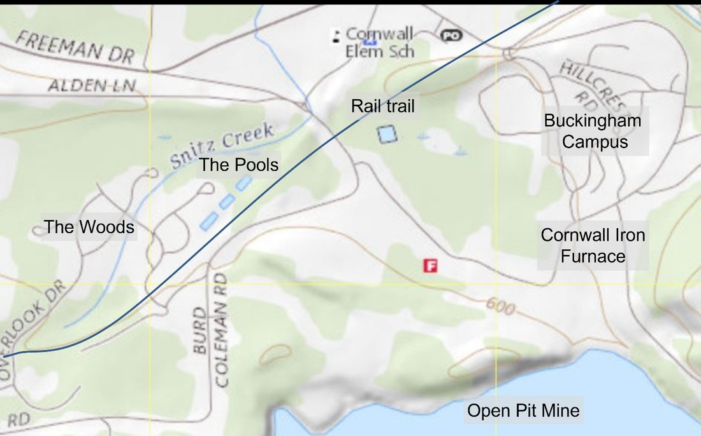
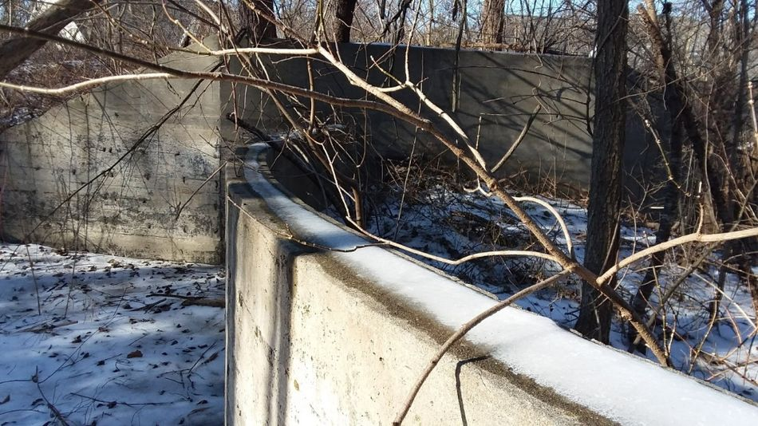
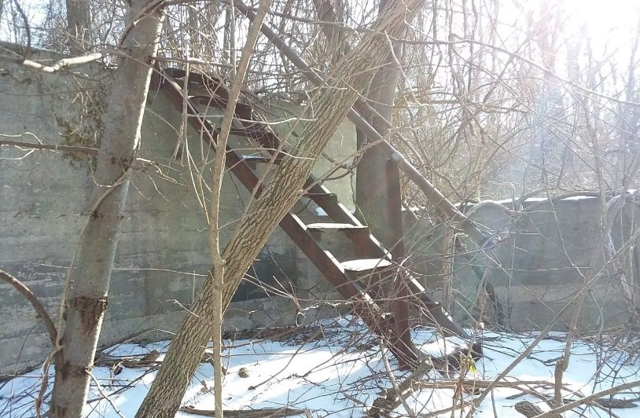
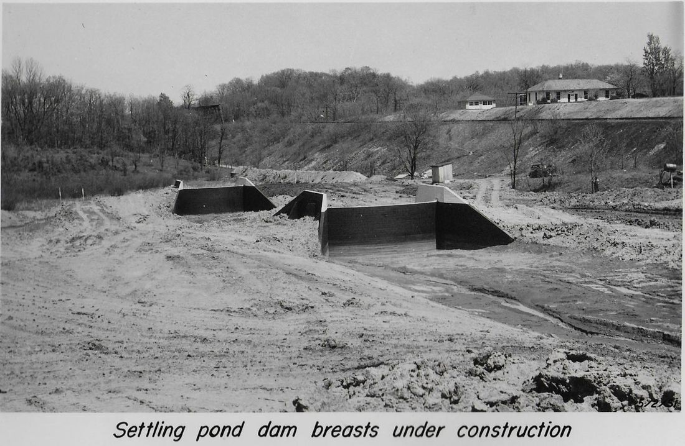
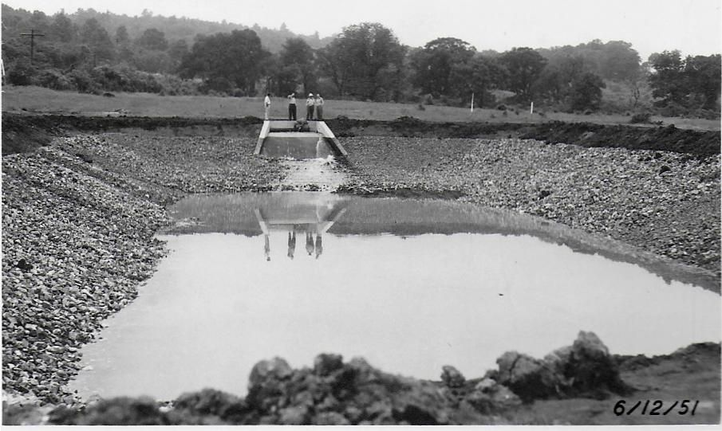
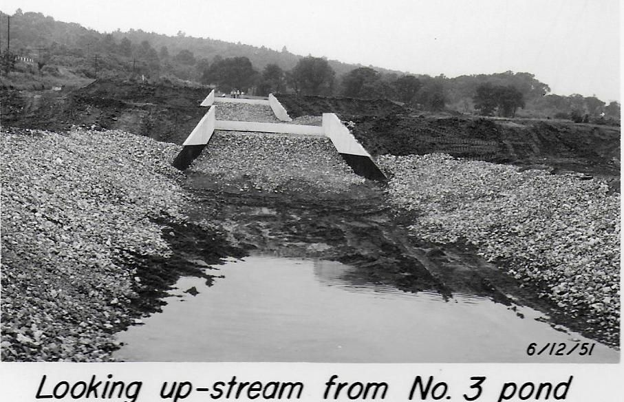
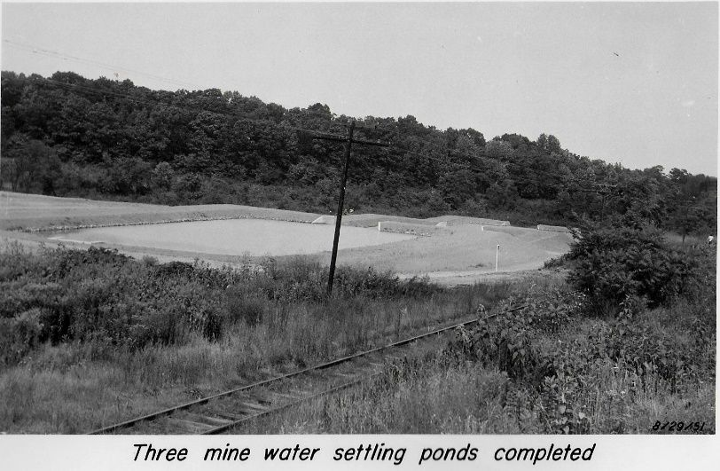

It happened again, this cold November day as I walked my dog on the Rail Trail, just as it had last year. A riddle presented itself for the curious and clever: "Here in Cornwall, what is gray, disappears in Spring and reappears in Fall?"
The Riddle
Perhaps you already know the answer. When walking the trail from the Buckingham campus to the Woods campus, you may discern a ghostly gray shape down amongst the trees to your right. You must be paying attention because it pops up and within a few steps it's gone.
Furthermore, the phenomenon happens not just once but three times as you walk along. What IS that? By the way, as Spring turns into Summer — it just won't happen at all. Nothing to see, move along folks!
Care for a Swim, Anyone?

Though it looks like an overgrown wooded area that deer are known to inhabit, there is more than meets the eye. Once when examining a local topographic map I was surprised to see three rectangular pools right in the midst of our Meadows neighborhood of the Woods.
Rising to the Challenge
I had no idea what those pools on the map were for. But late last winter curiosity finally got the better of me, so I trudged through the snowy woods to go find those strange gray shapes. It was the proper time for bushwhacking, with the undergrowth reduced by autumn and winter. Spring was approaching so the ground was soft and slippery in spots, and ice was turning to slush.
As I left my backyard the terrain soon dropped off into the sanctuary of the first pool. Artificial berms define each side. On later dog-walks down Chicory Drive it became easy to notice these berms extending down behind the houses. Who knew, my Chicory Drive neighbors enjoy waterfront property with an Olympic-sized swimming pool in their backyard!


150 feet through the first pool stands an old concrete cofferdam, not quite 6 feet tall, arched backward to provide strength in holding back water. Old pieces of rusted iron protruded from the concrete. The sloping sides on the downstream side of the coffer dam explained the angular shapes I had been seeing through the trees from the rail trail.
I trekked down further to another pair of berms, truncated by a second cofferdam. Continuing further I found the third pool, again complete with berms and cofferdam. This lowest section was quite marshy, with dead cattails bobbing and weaving in the slight breeze. There were plenty of deer tracks around; the only sound was the chirping of the early birds on a sunny afternoon. The cold winter air was clean; not many spring odors were registering in my nose. As I looked up through the trees, the sky was a pretty, soft blue punctuated with cotton-ball clouds.
Somewhat satisfied with my find I returned home, yet still in a fog. What the heck are these things? How do they fit into the local history of furnaces, mines, and railroads?
Answers Come to Those Who Wait
On those daily dog walks I've collected a few other puzzling pieces. A rusty open-ended iron pipe sticks out of the road bank behind my house. Half-buried in the dirt nearby is a long companion section of rusted pipe. Further, immediately behind my neighbor's sun porch still rests a concrete abutment with a large industrial pipe fitting.
The puzzle pieces dropped into place when I put the question to a colleague at the Cornwall Iron Furnace, where I volunteer. Mike Weber, our own professional geologist known for his excellent history webinars on the Cornwall ore deposit, gave me the answer. Mike has also been researching the history of Bethlehem Steel in Cornwall.
Briefly, Bethlehem Steel came to town starting in 1916, purchasing the various furnaces, buying other small steel companies, and also acquiring a controlling share in the Cornwall Mine, aided by their significant profits from World War I. By 1921 they had shut down the local anthracite furnaces and were instead sending ore to their steel mills in the region.
At that time the open pit mine was getting deeper (460 feet) and narrower so the miners drilled shaft number 3 under the open pit in pursuit of deeper ore to a level of 740 feet. The shaft entrance was between Middle and Grassy Hill, and the access road is nearly opposite to our entrance to "The Woods," where the stone mason's property stands today. The large piles of waste rock along Burd Coleman Road came out of No. 3 mine over decades of operation.
Wait for It…
Yes, yes, about those mysterious swimming pools. The No. 3 mine first operated from 1927 to 1941 and then paused for several years to avoid interfering with open pit mining up above. After World War II new winds were blowing. Underground operations were resuming in Mine No. 3. The year before the Methodists opened a retirement community in 1949, the Federal Water Pollution Control Act of 1948 prompted the State of Pennsylvania to require the regulation of water discharges from the mine. The State subsequently approved the construction of three settling ponds for Mine No. 3, which completed on June 12, 1951.
The settling ponds performed as needed. Samples of the water pumped from No. 3 Mine had 74,306 parts per million (ppm) of suspended solids and a pH of 7.6. By the time the water flowed down that iron pipe in my back yard, through the valve behind my neighbor's house, and into the three cascading settling ponds, the discharge from the final pond as it entered Snitz Creek had only 14 parts per million suspended solids and a pH of 8.2.
That's 99.98% reduction, water that is "purer" than ivory soap!
As life in Cornwall moved on into 1972 Hurricane Agnes caused serious problems for Lebanon County, including the cessation of mining operations. The settling ponds no longer served a purpose and over the last 50 years trees have rendered them unseen. When the Woods Campus started building in 2004, they were left undisturbed. You might have never known, but courtesy of Mike Weber we have both explanations and photos.

Epilogue: A Pictorial History



